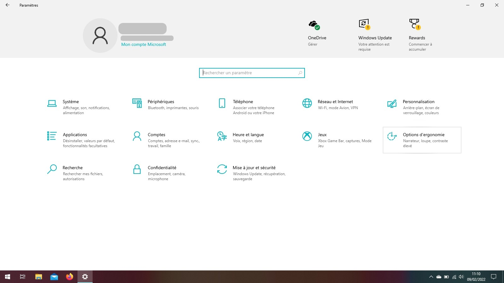
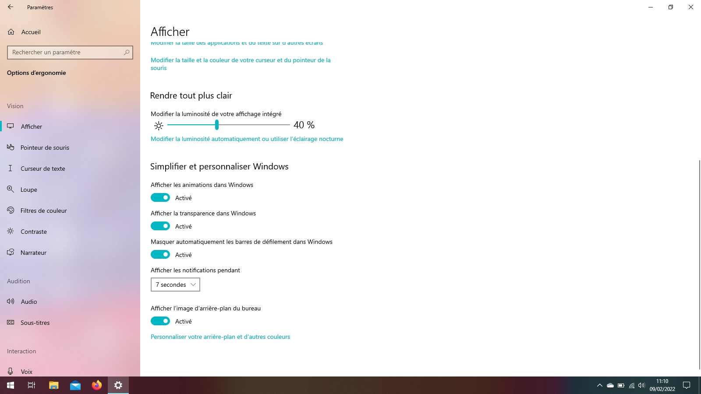
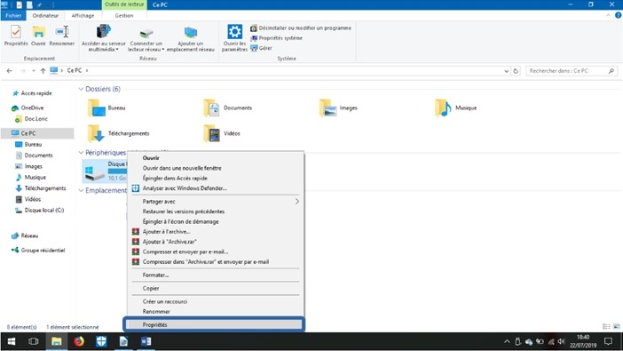
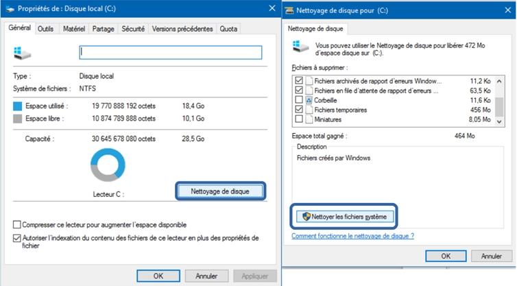
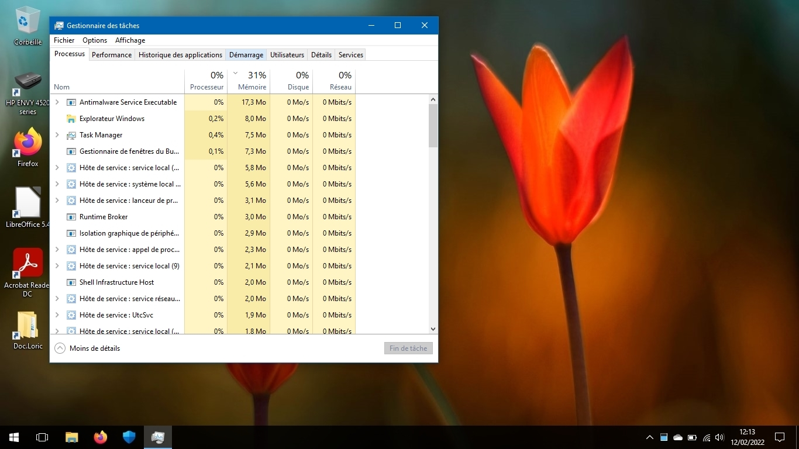
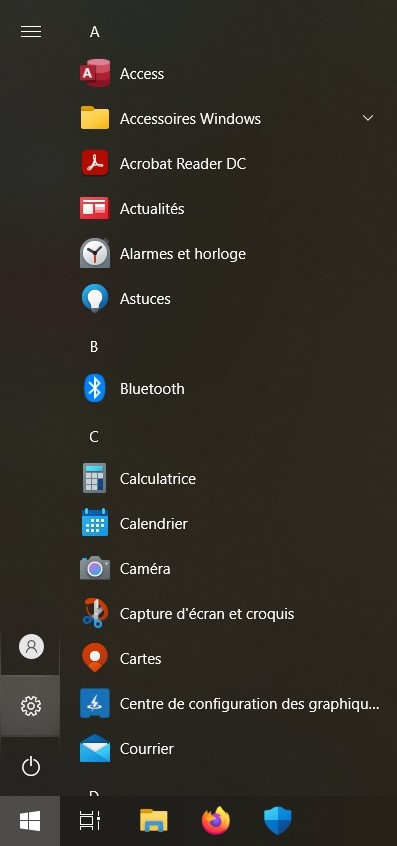
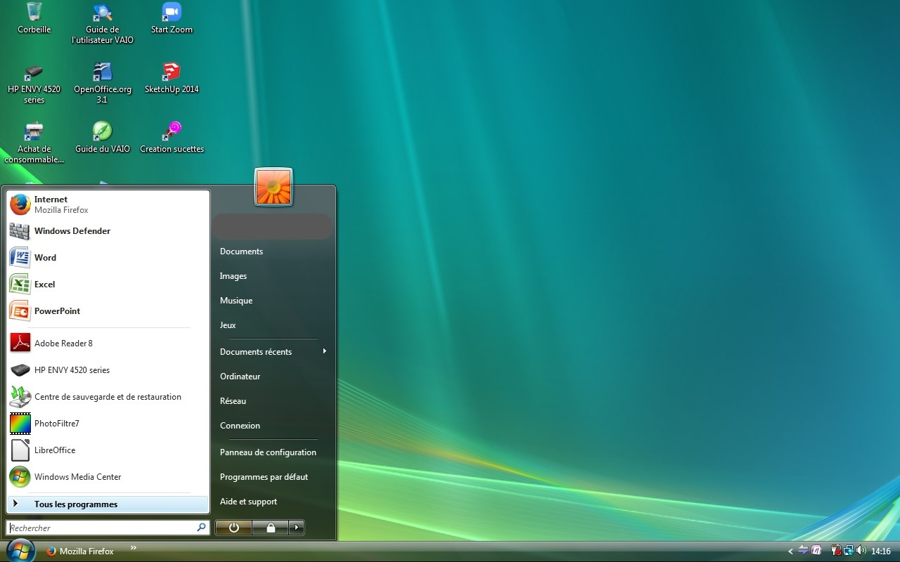
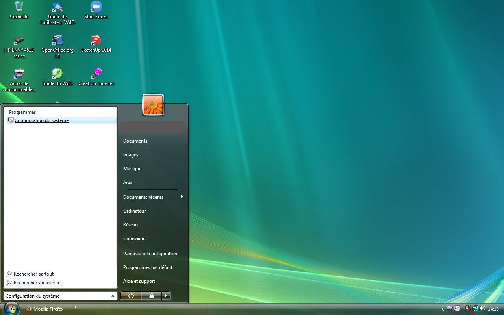
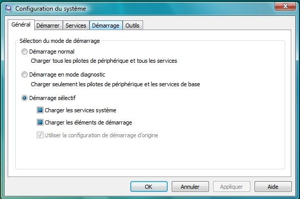
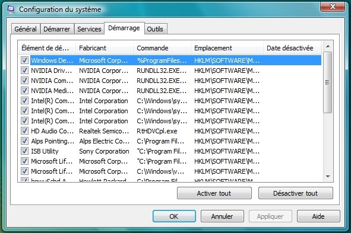

Méthode 1 : Enlevez les animations pour une meilleur performance (Efficace à 50%)
Pour toutes versions de Windows (sauf Windows 11 et supérieur) :
Sans animations, c’est moins joli, mais plus rapide. Pour cela, cliquez sur Démarrer, puis panneau de configuration (dans le dossier Système Windows).
Cliquez sur système et sécurité, puis afficher la quantité de RAM et la vitesse du processeur.
Cliquez sur Paramètres système avancés (onglet à gauche).
Ensuite vous cliquez sur Paramètres… ci-dessous, puis cochez Ajustez afin d’obtenir les meilleures performances et enfin cliquez sur OK.
Pour Windows 10 version 2004 et supérieur :
Cliquez sur Démarrer, puis Paramètres
Allez dans Options d'ergonomie
Dans la rubrique Simplifier et personnaliser, vous pouvez enlever les animations dans Windows, mais également enlever la transparence, qui peut ralentir les anciens PC sous cette version de Windows 10
Si le problème n’est pas résolu consultez la méthode 2 (vous pouvez si vous le souhaiter remettre les animations)
Méthode 2 : Réduire le taux d’utilisation de mémoire de Antimalware Service Executable et Cortana (Efficace à 70% pour les PC ayant Windows Defender et 4Go de RAM ou moins)
Pour Windows 10 et supérieur :
Si votre ordinateur ralentit de plus en plus et que votre antivirus actif est Microsoft Defender (ou Windows Defender), cette étape pourrait vous aider.
Cause du problème : Microsoft defender utilise beaucoup de mémoires pour protéger en temps réel ces deux services. Nous ne pouvons pas les arrêter, mais nous pouvons les rafraîchir.
Si vous avez la version 1607 ou inférieur, cliquez sur Démarrer, puis paramètres.
Ensuite vous cliquez sur Mise à jour et sécurité.
Dans l’onglet Windows Defender, cliquez sur Ajouter une exclusion.
Ajoutez un dossier à exclure, puis parcourez dans C:\ProgramData\Microsoft\Windows Defender\platform puis cliquez sur Exclure ce dossier. Idem pour C:\WINDOWS\SystemApps\Microsoft.Windows.Cortana_cw5n1h2txyewy
Une fois fini, redémarrez le PC
Si vous avez la version 1809 ou supérieur, cliquez sur Démarrer, puis Sécurité Windows (pour les versions 1703 à 1803, l'application se nomme Centre de sécurité Windows Defender)
Ensuite, cliquez sur Protection contre les virus et menaces
Cliquez sur Gérer les paramètres
Cliquez sur Ajouter ou supprimer des exclusions, ensuite, Ajoutez un dossier à exclure, puis parcourez dans C:\ProgramData\Microsoft\Windows Defender\platform (C:\ProgramData\Microsoft\Windows Defender suffit pour Windows 11 et supérieur à condition d'ajouter C:\Program Files\Windows Defender à exclure)puis cliquez sur Exclure ce dossier. Idem pour C:\WINDOWS\SystemApps\Microsoft.Windows.Cortana_cw5n1h2txyewy (ou C:\WINDOWS\SystemApps\Microsoft.Windows.Search_cw5n1h2txyewy pour les versions 2004 ou plus)
Une fois fini, redémarrez le PC.
Méthode 3 : Nettoyer le disque (Efficace à 40%)
Pour Windows XP et supérieur
Le nettoyage du disque peut le rendre plus rapide, pour cela, ouvrez l’explorateur de fichiers, clic droit sur le disque (C:) (disque par défaut avec le logo Windows), puis Propriété.
Cliquez ensuite sur nettoyage du disque et vous gérez ce que vous voulez supprimer. Vous pouvez également nettoyer des fichiers système si vous voulez pour gagner de l'espace de stockage.
Enfin valider sur OK.
Si aucune des méthodes n’a fonctionné, essayer de désinstaller la dernière application installée, ou les méthodes qui suivent :
Méthode 4 : Bloquer les programmes de démarrage (Efficace à 70%)
Bloquer les programmes de démarrage permet d'accélérer le démarrage, mais aussi l'arrêt et les performances de l'ordinateur. Certains programmes peuvent fortement ralentir le démarrage de l'ordinateur.
Pour Windows 8.1 jusqu'à Windows 10 2004 :
Pour bloquer les programmes de démarrage, faites clic droit sur la barre des tâches, puis clic sur Gestionnaire des tâches.
Cliquez sur Démarrage
Sélectionnez les programmes qui ne vous dérange pas de désactiver le démarrage automatique et cliquez sur désactiver (Attention à ne pas désactiver les pilotes du PC et votre antivirus)
Pour Windows 10 2004 ou supérieur :
La démarche est la même, mais vous pouvez également le faire d'une autre manière afin de bloquer plus de programmes de démarrage.
Pour bloquer plus de programmes de démarrage, cliquez sur Démarrer, puis paramètres.
Allez dans Applications
Allez dans la rubrique Démarrage
Sélectionnez les programmes qui ne vous dérange pas de désactiver le démarrage automatique et cliquez sur désactiver (Attention à ne pas désactiver les pilotes du PC et votre antivirus)
Pour Windows 7 et inférieur :
Pour Windows XP, Vista et 7, la démarche est différente : cela se fait à partir du menu Démarrer.
Dans la barre de recherche, tapez Configuration du système (Windows peut vous demander des droits administrateur)
Sélectionner Démarrage
Sélectionnez les programmes qui ne vous dérange pas de désactiver le démarrage automatique et cliquez sur désactiver (Attention à ne pas désactiver les pilotes du PC et votre antivirus)
Méthode 5 : Revenir à une ancienne version de Windows 10 (recommandée fortement si aucune méthode n'a fonctionnée) (Efficace à 99%)
Cette méthode doit être réalisée avec délicatesse car en cas de mauvaise manipulation, votre PC sera entièrement inutilisable. Avant toutes manipulation, lisez entièrement toutes les étapes, puis relisez tout en réalisant les étapes.
Pour revenir à une ancienne version de Windows 10 (ici 1607), suivez ce tuto d'installation de Windows 10 et réalisez toutes les étapes sur ce PC.
Sinon, si vous avez le courage de démonter votre PC, essayez les méthodes qui suivent.
Méthode 6 : Changer le disque dur du système (Efficace à 90%)
Uniquement pour les PC qui ont un disque dur HDD
Aujourd'hui, il existe deux types principales de disques durs : les HDD et les SSD
Les disques durs HDD sont des anciens disques durs qui ont une grande capacité de stockage, alors que les disques SSD sont super rapide, mais le prix d'un disque SSD à grande capacité de stockage est très élevé. Pour vérifier si le disque dur est un SSD, pour Windows 10 2004 et supérieur, faites clic droit sur la barre des tâches, puis clic sur Gestionnaire des tâches.
Allez dans l'onglet Performance
Vous retrouvez le type de disque en dessous du disque suivi le (C:)
Dans cet exemple, il s'agit d'un disque dur SSD, mais s'il s'agisait d'un disque HHD, vous pouvez le remplacer par un disque SSD pour 30 à 150€ environ. Si besoin, n'hésitez pas à demander à un professionnel qui saura comment le remplacer sans risque.
Sinon, vous pouvez le faire vous-même, mais pour cela, il faut y consacrer du temps. Sur un autre ordinateur, brancher l'ancien disque HDD et le nouveau disque SSD, et copier tous les fichiers sans exception sur le nouveau disque. Sinon, vous pouvez installer le système d'exploitation à nouveau gratuitement avec ce tuto proposé avec Windows 10, mais réalisable gratuitement avec le même système d'exploitation que celui qui était installé à l'origine (plus rapide).